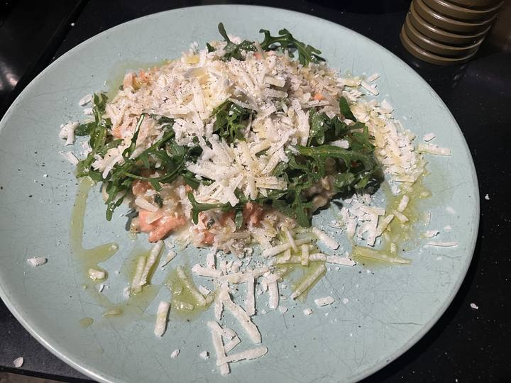

1 cup barley
3 cups water
1/2 cup wine
25min pressure cook
2 garlic
1 stick celery
1 cup barley
3 cups water
1/2 cup wine
50g butter
Handful(s) wild garlic
50g goats cheese
150g smoked trout
In pressure cooker.Fry 2 cloves garlic and 2 sticks celery (chopped) in olive oil. Add barley. Fry. 5 min gentle. Add water and wine. Salt and pepper. Pressure cook.
Stir in few knobs butter. Handfuls of wild garlic. 50g soft goats cheese and 150g smoked trout. Be gentle. A few mins.
Serve with rocket, parmesan and drizzle olive oil.